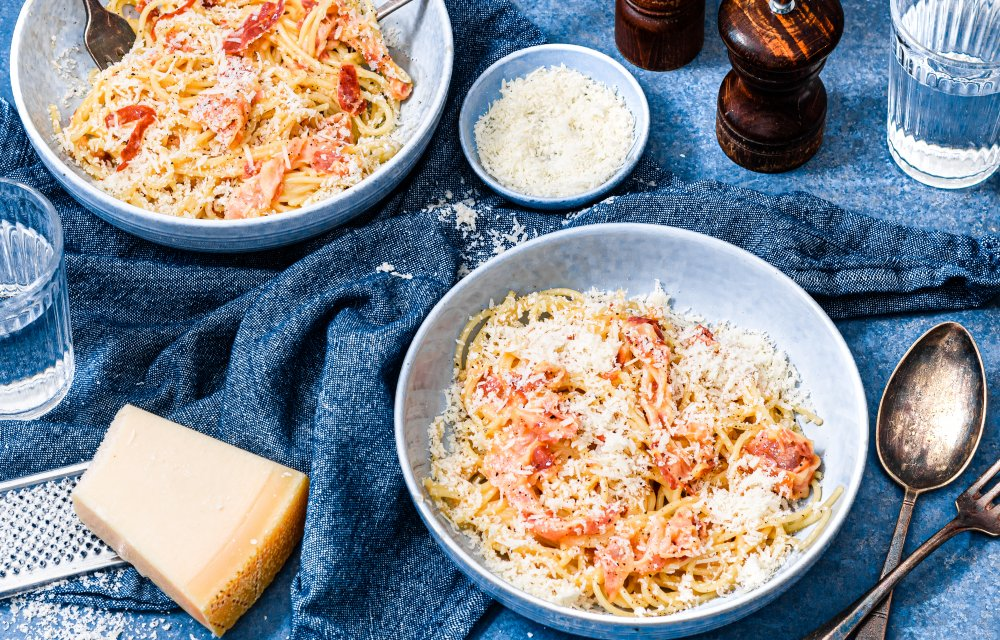

Klassieke spaghetti carbonara

Ingredienten
- 400 g spaghetti
- 250 g pancetta
- 100 g parmezaanse kaas
- 4 eieren
Bereiding
- Kook de spaghetti volgens de aanwijzingen op de verpakking.
- Snijd de pancetta in plakjes. Verhit wat olijfolie in een hapjespan, voeg de pancetta toe en bak zo’n 15 minuten op halfhoog vuur.
- Meng in de kom de eieren met de helft van de Parmezaanse kaas en bestrooi royaal met peper.
- Voeg de gekookte spaghetti toe aan de pancetta en roer door elkaar.
- Zet het vuur uit en voeg het eiermengsel toe. Schep het geheel goed door en laat een paar minuten rusten.
- Serveer met de overgebleven Parmezaanse kaas en eventueel wat peper.